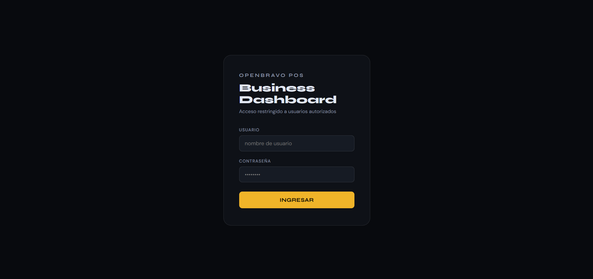

Overview
A fully implemented analytics dashboard module for a POS system, designed to help restaurant owners understand performance through data visualization.
The Problem
Key information like top-selling products or peak hours was hidden in raw data, making decision-making inconsistent and reactive.
